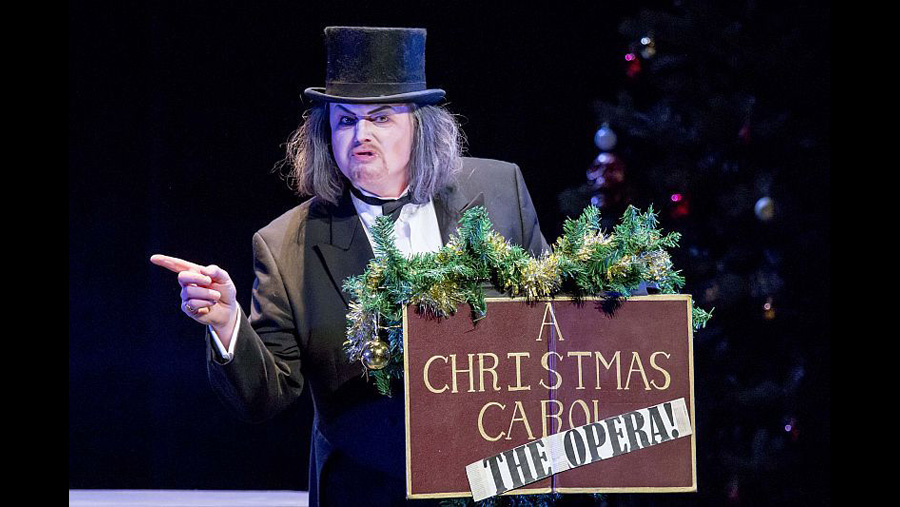

| Character | Actor |
|---|---|
| Ebenezer Scrooge | Jay Hunter Morris / Kevin Ray |
| Role | Person |
|---|---|
| Composer | Iain Bell |
| Libretto | Simon Callow |
An opera by Iain Bell, with libretto by Simon Callow, which premiered at Houston Grand Opera on 5 December 2014, with Heldentenor Jay Hunter Morris and former Houston Grand Opera Studio member Kevin Ray alternating in the single role of the Narrator.